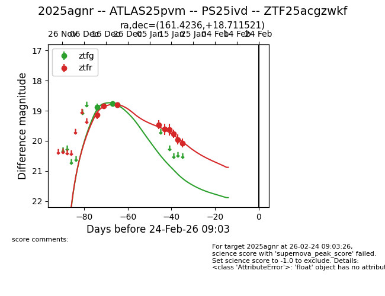
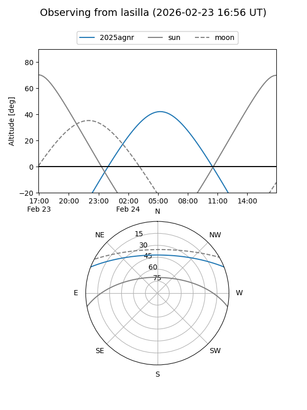
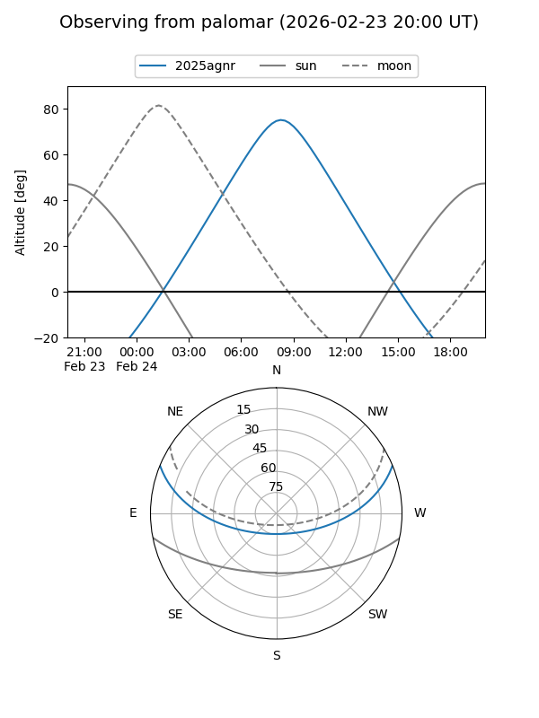
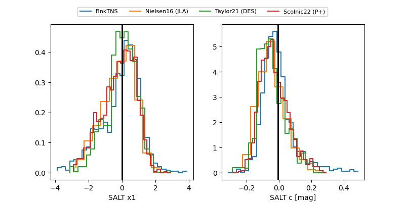

2025agnr
Target 2025agnr at 2025-12-23 11:02
Aliases and brokers:
FINK: fink-portal.org/ZTF25acgzwkf
Lasair: lasair-ztf.lsst.ac.uk/objects/ZTF25acgzwkf
ALeRCE: alerce.online/object/ZTF25acgzwkf
TNS: wis-tns.org/object/2025agnr
YSE: ziggy.ucolick.org/yse/transient_detail/2025agnr
alt names
ZTF25acgzwkf (ztf,fink_ztf)
2025agnr (tns,yse)
Coordinates:
equatorial (ra, dec) = 161.4237,+18.71157
equatorial (HMS+DMS) = 10:45:41.68,+18:42:41.66
galactic (l, b) = (222.4678,+59.94053)
Flags:
Photometry:
last atlaso=19.08, ztfg=18.81, ztfr=18.79
2 atlaso, 3 ztfg, 3 ztfr detections
Lightcurve

Visibility


Additional plots
